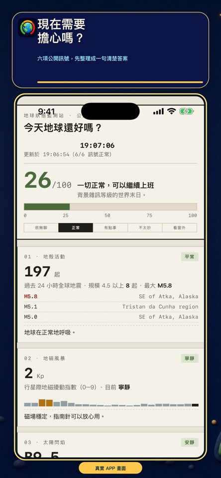
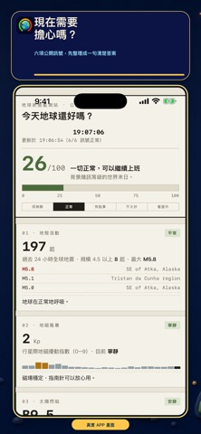
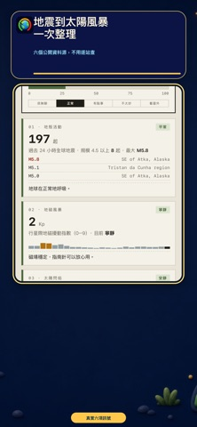
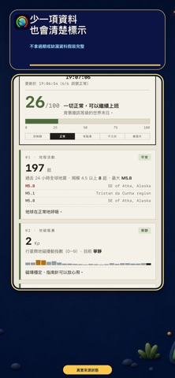
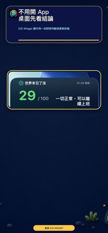

將多種公開訊號整理為 0 到 100 的綜合指數，快速掌握今日氛圍。
生活 APP · INTRODUCTION
世界末日了沒
把全球的不安，換成今天看得懂的一個數字。
彙整地震、地磁風暴、太陽閃焰、市場恐慌、太空站與疫情資料，計算 0 到 100 的末日指數與 30 天變化。

把功能留在
真正需要的時刻。
彙整地震、地磁風暴、太陽閃焰、市場恐慌、太空站與疫情資料，計算 0 到 100 的末日指數與 30 天變化。
同時觀察地震、太陽活動、地磁、市場與公共衛生等不同面向。
用時間軸比較近期指數起伏，不讓單一事件遮蔽整體變化。
從各項指標回看分數變化的來源，知道今天為什麼升高或降低。
完整商店
宣傳圖集。
依照商店目前提供的宣傳素材完整排列；圖片維持原始比例，在手機上會自動換行，不再裁切主要畫面。




使用以前，
值得知道。
這些提醒協助你理解資料界線、平台狀態與合適的使用方式。
不是預言
指數是資訊整理與娛樂化呈現，不代表災害預測或安全保證。
即時性
資料更新速度由各公開來源決定，緊急資訊仍應以主管機關公告為準。
平台狀態
目前 Google Play 開發中，iOS 版本已在 App Store 正式發布。